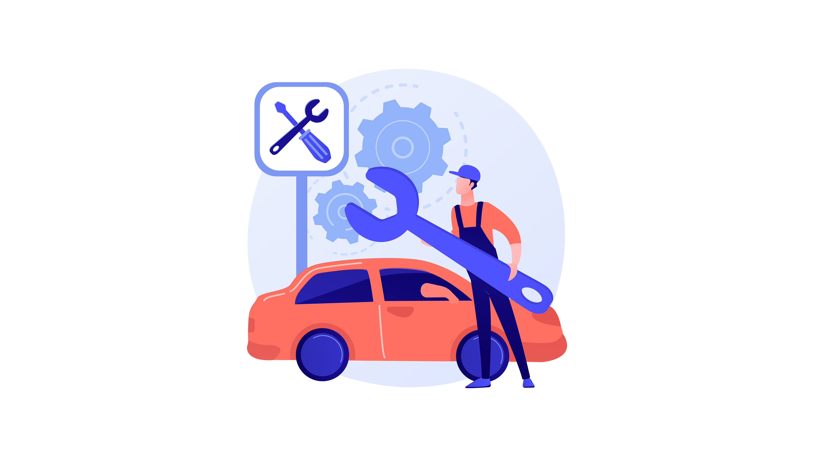

Servis motor profesional, cepat, dan terpercaya. Kami melayani berbagai jenis motor dengan tenaga mekanik berpengalaman dan sparepart berkualitas.

Bengkel Any Jaya adalah bengkel motor yang berdiri dengan komitmen memberikan pelayanan servis terbaik, serta melayani berbagai jenis kerusakan motor.
Dengan mekanik berpengalaman dan peralatan modern, kami memastikan kendaraan Anda ditangani dengan standar kualitas tinggi dan harga yang transparan.
Matic, bebek, sport — semua jenis motor kami tangani
Setiap pekerjaan servis dilengkapi garansi pengerjaan
Estimasi waktu pengerjaan yang akurat dan ditepati
Tarif terjangkau dengan kualitas pengerjaan premium
Tidak perlu menunggu di bengkel atau bolak-balik menelepon. Cukup masukkan kode antrian dan pantau progress servis kendaraan kamu secara real-time.
Setiap kendaraan mendapat kode antrian unik dari kasir saat pendaftaran.
Status berubah otomatis saat mekanik memperbarui progress pekerjaan.
Bisa diakses dari perangkat apapun — HP, tablet, maupun komputer.
Kunjungi kami langsung atau gunakan peta di bawah untuk navigasi ke lokasi bengkel.
Desa Kalitengah, Kecamatan Tanggulangin
Kabupaten Sidoarjo, Jawa
Timur
Senin – Jumat: 07.00 – 18.00 WIB
Minggu & Hari Libur: 08.00 –
16.00
WIB
+62 897-9800-73
Dari manajemen servis hingga laporan keuangan — SIPENJA menyederhanakan operasional bengkel kamu.
Kelola antrian servis kendaraan, assign mekanik, dan pantau progress pekerjaan secara real-time.
Pantau stok sparepart, atur harga jual, dan kelola supplier dalam satu tempat yang mudah diakses.
Proses transaksi servis dan pembelian sparepart dengan cepat. Cetak struk otomatis untuk pelanggan.
Atur data karyawan, role akses, dan pantau aktivitas mekanik serta kasir dengan mudah.
Laporan penjualan sparepart dan servis lengkap. Export ke Excel atau cetak sebagai PDF kapan saja.
Pelanggan dapat memantau status servis kendaraannya secara mandiri tanpa perlu menghubungi bengkel.